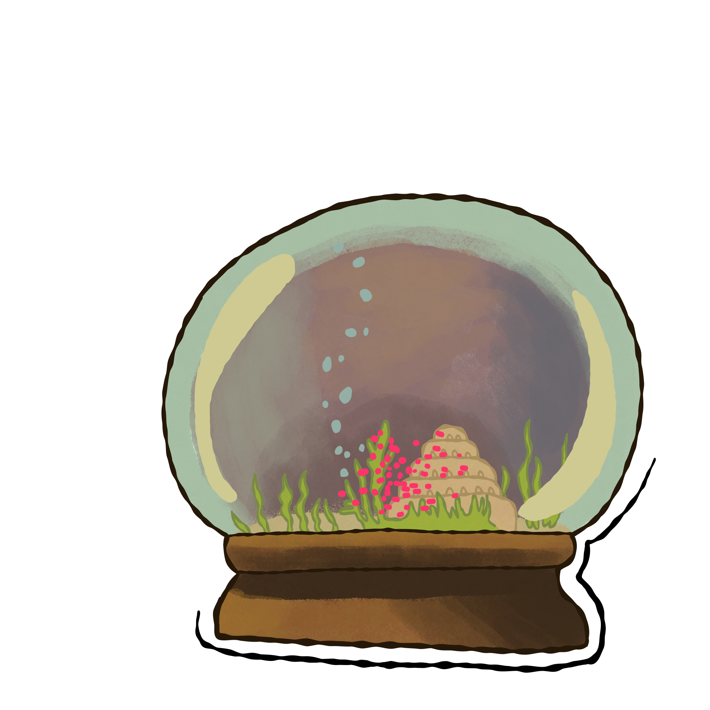
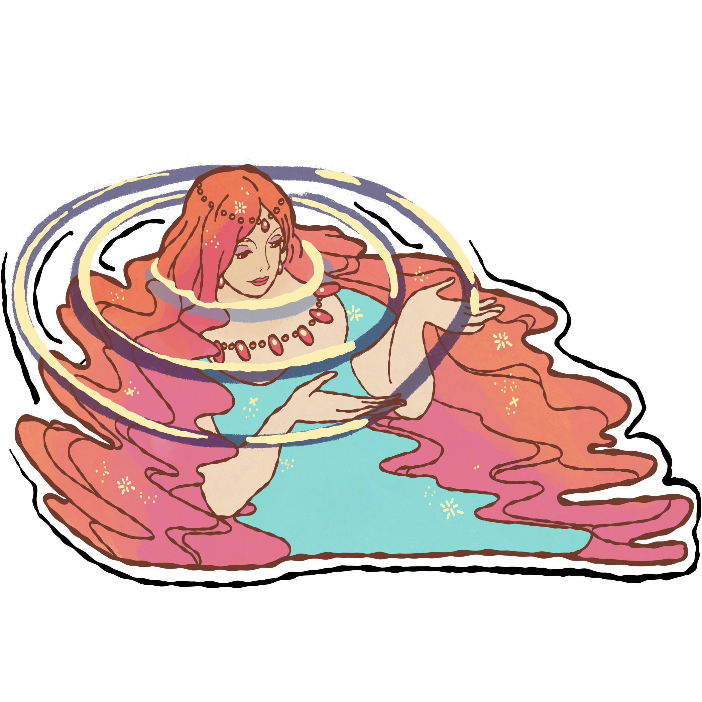
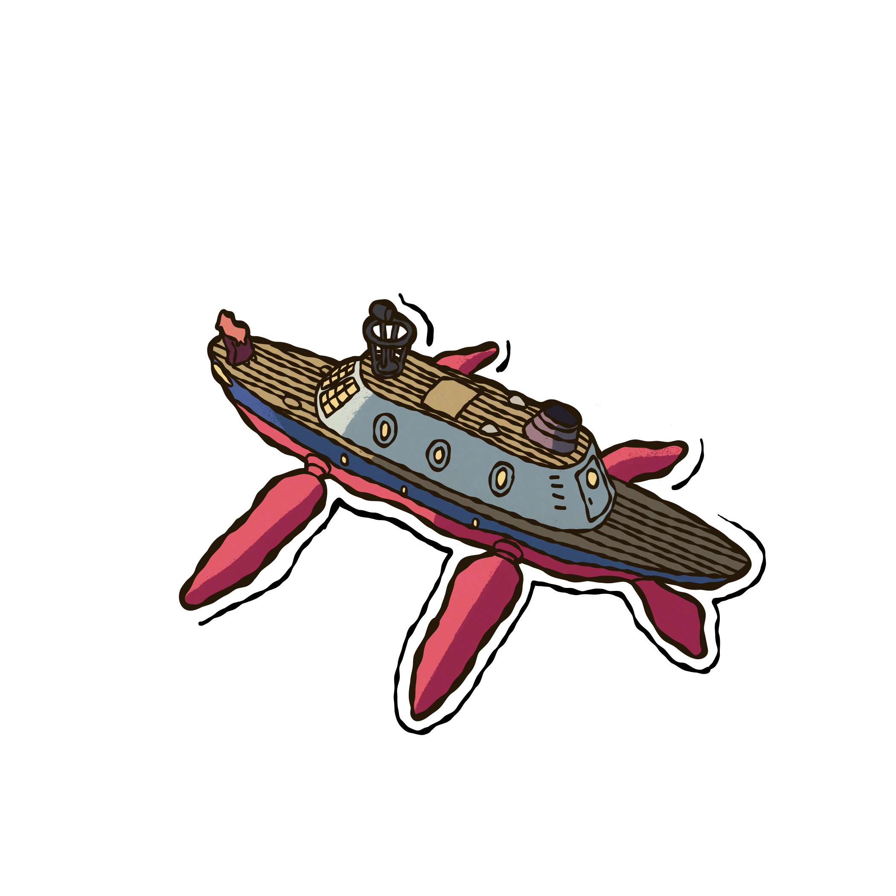

Back in her home, Ponyo escaped with the help of her 200 sisters and went into her father’s private studies. There she drank a magical elixir that granted her the ability to turn human! Then she set out to reunite with Sosuke.

After searching with her and her sisters she finally found Sosuke. She turned human right before his eyes as they reunited. Sosuke’s mom took both of them inside her home and away from the Tsunami that Ponyo caused searching for Sosuke.
While Ponyo and Sosuke were bonding, the world was changing. Because Ponyo got into her father’s elixirs, the magic she used to become human caused nature to be unbalanced. Ponyo’s parents met up together and decided that they would let Ponyo be human, but only after Sosuke’s love for Ponyo was tested.

